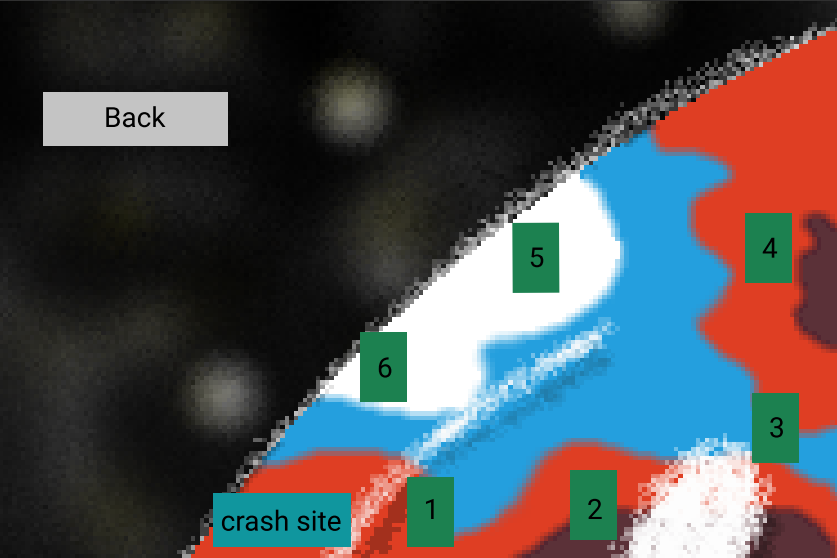

This document details the game Card Capsules, which is a 2D side scrolling platformer puzzle game made with the Wolfie2D engine. The core gameplay loop will focus on placing objects to help traverse an inhospitable alien planet. This game employs use of a physics engine, AI, collision detection, memory management, and especially precise time control.
Card Capsules is a game created for the Windows platform using the Wolfie2D game engine.
After a terraforming operation went awry due to a space pirate assault, our protaganist must crash land on the inhospitable world that they were trying to rebuild. The player's newfound objective is to reach the wreckage of their ship and to repair it with the card capsules that they find from the remnants that scattered the planet when the ship crash landed.
The player must progress through each platforming puzzle in a level to recover pieces of their destroyed spaceship. Once they have each part and reach the wreckage, they can repair their ship and escape the planet to safety.
The player will travel through the level and collect cards along the way to help them traverse through traps and enemies. These cards are physical
objects that can be placed in the game world. Whilst card placement is occurring, time will be slowed down to assist the player in their decision making. This will affect animations, sound, and moving objects.
The Cards that the player can receive are as follows:
Cards are distributed to the player based on the level. They will sometimes be provided with cards at the beginning of the level. Cards may also be found scattered throughout the level itself, or as a reward from defeating enemies.
While the player is placing a card, the in-game screen will be overlaid with a grid. This is a helpful tool for the player to place their card in the correct location.
There are also two regions currently planned, spanning multiple levels. They are as follows:
Above is the Wireframe which illustrates the connections between each of the sections of our GUI.
Splash Screen - The splash screen presents a game logo, art, and a prompt telling the player to press any key to continue.
Home Screen - Screen accessed upon startup which contains the following options:
Level Select - Illustrates what levels the player may play. The player may click on a number to be taken to the beginning of its respective level.

Help Screen - Provides info on the game and its developers, contains the game's backstory and cheat codes to help out the player.
The player may press any of the menu's respective buttons to receive the information they need, or they may hit the back button to return to the main menu.
In Game UI:
All artwork included in Card Capsules is original, and created with the help of the tools Gimp, Asprite, and Paint3D.
The following assets need to be created:
All sound effects will be original. Sound effects will be created for the following events:
Card Capsules will use original music for navigating both its menus and its game levels.